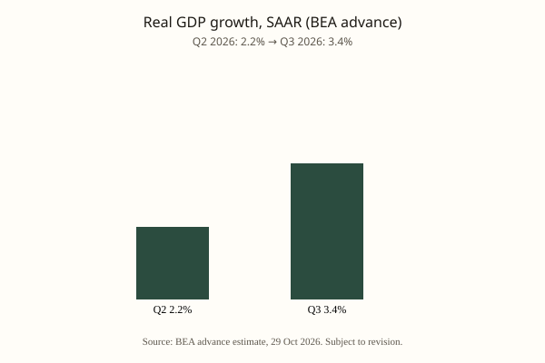

Economy · BEA · 29 October 2026
U.S. real GDP rose at a 3.4 percent annual rate in the third quarter, BEA advance estimate.
.jpg)

What the wires agree on
The Bureau of Economic Analysis released its advance estimate that real gross domestic product increased at an annual rate of 3.4 percent in the third quarter of 2026. The second-quarter rate was 2.2 percent. The increase reflected rises in investment, consumer spending, and government spending, partly offset by a decrease in exports; imports increased. Real final sales to private domestic purchasers rose 4.9 percent. The advance estimate is based on source data that are incomplete or subject to further revision; the second estimate is scheduled for 25 November.
The BEA release is the primary source. Bloomberg and Yahoo Finance reported the headline figure and noted that it exceeded some private forecasts. The White House highlighted the print in the context of the midterm campaign.
What is a claim or still subject to revision
The 3.4 percent figure is an advance estimate. Subsequent estimates have historically revised both upward and downward as more complete data on inventories, trade, and consumer spending arrive. Attribution of the growth rate to specific policies is an interpretive claim, not a finding contained in the BEA release. Market reactions and political messaging are separate from the statistical product.
Mechanism the reader needs
Real GDP measures the inflation-adjusted value of final goods and services produced in the United States. The advance estimate is the first of three monthly releases for each quarter. It relies on a combination of survey data, administrative records, and statistical interpolations. The annualized rate is the quarterly change multiplied by four and compounded; it is not a year-over-year figure. Real final sales to private domestic purchasers exclude inventory changes, government spending, and net exports, providing a measure of underlying private demand.
The BEA is an agency of the Department of Commerce. Its estimates follow internationally recognized standards and are subject to public revision schedules. The second estimate incorporates additional source data; the third estimate incorporates still more. Users who treat the advance figure as final are using the number outside its stated precision.
Context
The third-quarter release arrives days before the midterm elections. Growth of 3.4 percent is faster than the second quarter and faster than some consensus forecasts published before the release. Whether the pace is sustained into the fourth quarter will depend on data not yet available. The Federal Reserve, which sets interest rates, watches the GDP figures alongside inflation and labor-market data; the advance estimate does not by itself determine the path of the federal funds rate.
Source scores
| Outlet | Headline | T | N | C |
|---|---|---|---|---|
| BEA | GDP (Advance Estimate), 3rd Quarter 2026 | 100 | 0 | 100 |
| Bloomberg | US Economy Grows a Faster-Than-Expected 3.4%, Most in a Year | 95 | 0 | 100 |
| Yahoo Finance | US GDP accelerates to 3.4% in the third quarter | 92 | +5 | 95 |